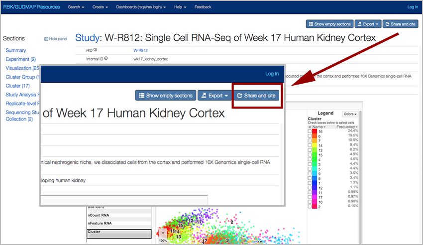
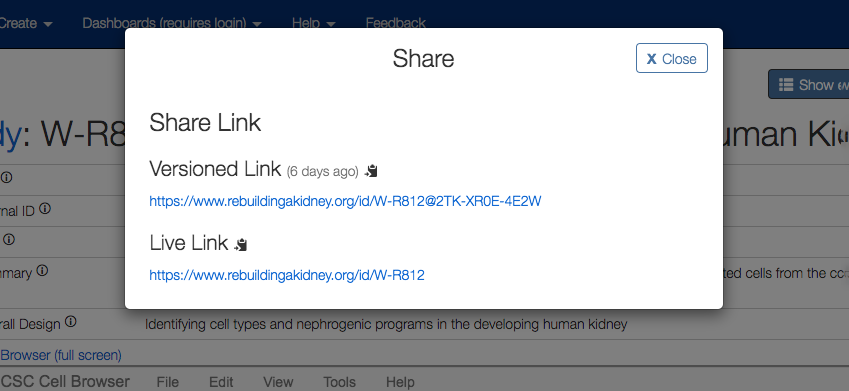

Users of RBK-hosted data are expected to cite the primary publication for the particular data used, as is the accepted norm in scientific publishing. (A full list of papers with data deposited in RBK is here.). In addition, the RBK consortium should be cited, along with data identifiers.
The (Re)Building a Kidney Consortium uses a data citation strategy that has been designed to ensure that all data is Findable, Accessible, Interoperable, and Reproducible (e.g. FAIR). As part of this strategy, RBK follows the principles for data citation laid out in DataCitation.
In addition to the primary publications, if RBK was utilized for finding data and additional associated data, please cite the consortium using a current consortium paper (see below) in acknowledgment and support of overall consortium efforts.
To cite the RBK Consortium, please use:
Oxburgh L, Carroll TJ, Cleaver O, Gossett DR, Hoshizaki DK, Hubbell JA, Humphreys BD, Jain S, Jensen J, Kaplan DL, Kesselman C, Ketchum CJ, Little MH, McMahon AP, Shankland SJ, Spence JR, Valerius MT, Wertheim JA, Wessely O, Zheng Y, Drummond IA. (Re)Building a Kidney. J Am Soc Nephrol. 2017 Jan 17. pii: ASN.2016101077. doi:10.1681/ASN.2016101077. View on PubMed
To enhance reproducibility and ensure that appropriate credit is made for data creation, data users are strongly encouraged to also cite the related data DOIs where appropriate to identify specific data entries for their readers. This creates a durable link from the manuscript to the large datasets that support the analysis and conclusions of the publication.
In support of primary publications, RBK issues individual Digital Object Identifiers (DOIs) that serve as persistent identifiers and links to data entries in the RBK data repository. When possible, these DOIs are included in the manuscripts published by consortium members as direct pointers to specific data hosted in the RBK data repository.
Data citations can be included in the bibliography of the paper and cited similarly to other types of publications in a manuscript. The exact format for data citation will vary from journal to journal, but in general, the citation should include:
Author(s)
Collection title (Nature data citation format does not specify this field, although other citation formats do recommend including the collection title.).
Year of publication
Repository name or publisher, e.g. (Re)Building a Kidney Consortium
DOI of data set being referenced.
Here is an example of a data citation that conforms to the format recommended by Nature:
[1] Benjamin Humphreys (Re)Building a Kidney Consortium https://doi.org/10.25548/14-4KG6, (2018).
which would be used in conjunction with the corresponding paper citation:
[2] H. Wu, Y. Kirita, E.L. Donnelly and B.D. Humphreys, Advantages of Single-Nucleus over Single-Cell RNA Sequencing of Adult Kidney: Rare Cell Types and Novel Cell States Revealed in Fibrosis, J Am Soc Nephrol, 2019, 30 (1) 23-32, 30510133, https://doi.org/10.1681/ASN.2018090912
Here is an example of how RBK data and its associated manuscript can be cited in the body of the manuscript:
"Analysis reported in this paper is based on RNASeq data [1] which was shown to achieve comparable gene detection to scRNA-seq while demonstrating reduced dissociation bias [2]."
In some instances, data in the RBK data repository will be released for public access and not have an associated publication. In this case, authors should use the persistent Record ID (i.e. RID) assigned by RBK (e.g. https://www.rebuildingakidney.org/id/W-R812). This citation, which has the same characteristics as a DOI, can be obtained by clicking the "Share and Cite" button on the upper right-hand part of the page for the data to be referenced.

The "Versioned Link" will reference the exact instance of this data while the "Live Link" will reference the current version.

If you are publishing a paper that uses subsets of RBK data, or aggregates data in new ways, it is desirable to create a new data collection. Data collections are a curated set of RBK data organized into one easily citable and referenced location with a Digital Object Identifier (DOI). This collection allows readers to unambiguously obtain full quality, source data that was referenced in the paper, which promotes reproducibility of scientific results.
If you are an RBK project publishing a paper, please create and reference a "Data Collection" for data included in your paper and any additional data you wish to be considered relevant to the published project. Follow the above section on how to add your data citation in the bibliography section, and how to cite your data collection in the manuscript.
Researchers outside of the RBK can request the creation of a new collection from existing RBK data by emailing help@rebuildingakidney.org.
In addition to including dataset references in the bibliography of your paper, journals are increasingly requiring statements of data accessibility. You can meet this requirement by including text similar to the following in the appropriate section (e.g. Data Availability, Methods, etc.):
Data Accessibility To increase rigor, reproducibility, and transparency, raw image files, sequencing files, and other data generated as part of this study were deposited into the RBK consortium database and are fully accessible at doi:10.25548/14-4KG6.
With the exception of the main RBK site (www.rebuildingakidney.org), links to pages within the site should never be used. Only persistent identifiers such as DOIs or RBK specific identifiers (RIDs) obtained from the "Share and Cite" button (e.g. URLs in the form https://www.rebuildingakidney.org/id/14-4KG6) are guaranteed to work at all times. The RBK repository makes no commitment to maintain links that do not follow these guidelines.
If you have any questions or wish to create a new RBK data collection, send an email to help@rebuildingakidney.org.